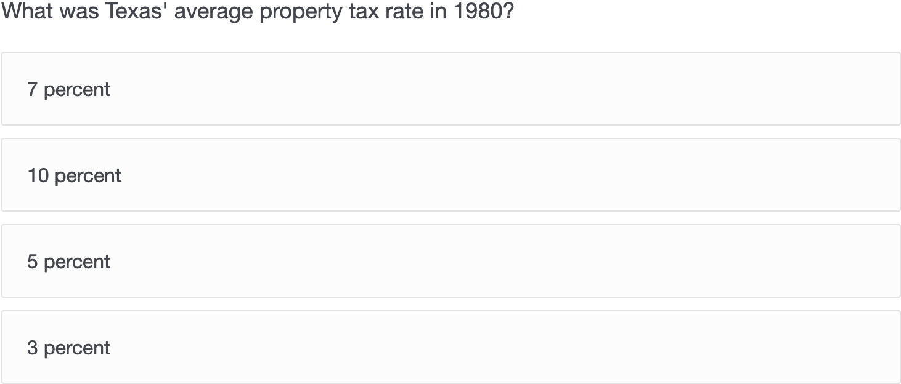
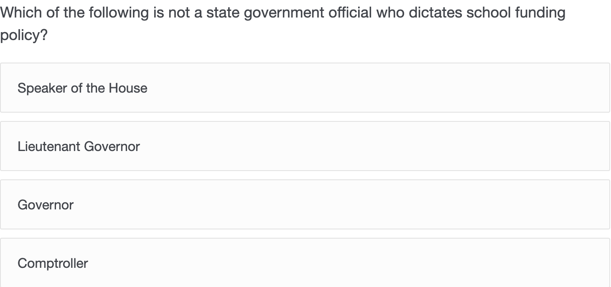
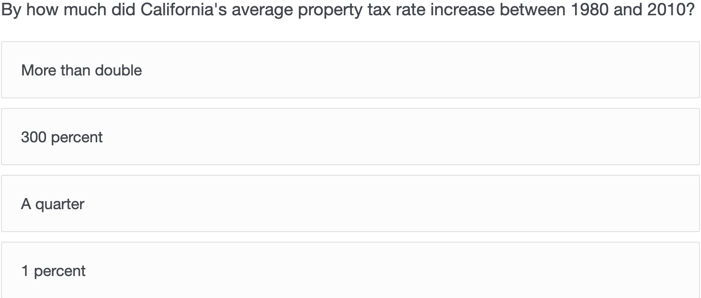

Introduction
Diffusion of innovation in digital technologies has caused a proliferation in new communication media, namely, digital news products. As the ever-changing landscape of journalism adapts to these changes, often slowly or behind the curve, rapid improvements, adjustments and examinations of these digital news products must take place to keep a news organization competitive. In this project, I examined current trends in the functionality of digital news products, specifically web-based journalism pieces, and how variances in these designs affect the ability of the user or reader to comprehend information from the story.
Variations in the presentation of journalistic content have been studied academically for decades. Researchers have tracked the visual convergence of news media as the dominant news medium shifted from print to broadcast to cable to the internet and how changes in the landscape of journalism affected the design of these news products. More directly, Neijens and Voorveld found readers of a newspaper presented digitally on a tablet had different perceptions of that product than the identical printed version. This implies that digital presentation can affect how users or readers interpret or react to information. Digital products present unique characteristics of interactivity with news content and thus, the creators of the products must think critically about what design decisions go into these products.
Above all, interactivity allows users to feel like active participants engaged in a communication process rather than passive viewers or recipients of a message. Beyond just including multimedia elements, like photos and videos embedded in a story, interactive data elements and hyperlinking to other news sources have been identified as areas of usability which should be of concern especially to journalists producing content online. However, some research has shown more interactive content in a story can, in fact, negatively impact reader retention and recall of news stories.
Some argue more media types can aid in information retention and recall, while others believe too much media in one presentation can overload one's cognitive abilities and negatively affect comprehension. Online health information was increasingly comprehended with increased levels of interactivity. In some cases, users of longform, online news pieces interacted more with the digital news product and exhibited more retention of the story's information. Other research shows more interaction and multimedia do not correlate with better story retention and comprehension.
The rapidity with which news technologies change and the further uncovering of ways to test them demonstrate the importance of constant testing of products, and this project looks to examine interactivity with digital news products and how that affects the user’s comprehension of the news information presented.
The Product
This project examined factors from web design and development – specifically, interaction – and how that affected viewers of online news articles. Findings from this experiment are relevant to the current facets of innovative journalism: web development, data interpretation and presentation, interactivity design and user experience. Implications should serve the goal of better understanding how users interact with digital news products and how that interaction affects their comprehension of news stories. This will help facilitate better creation of digital news products going forward. In a theoretical sense, I examined if good reporting is aided or hindered by the presence of more advanced interactive media elements – in this case, an interactive data element.
A variety of factors can affect how users comprehend information presented in online news stories such as the layout of text, multimedia content and advertisements. Branding from the news organization and news content charged with political or social divisiveness can also affect how a user processes the story. This study, therefore, looked to remove as many of these factors as possible to examine specifically how inteaction with one element in a web-based news story affects comprehension.
Story Content
To avoid a potentially divisive story, topics regarding elections, social movements and crime were avoided in favor of more objective and figure-based content. Stories from a variety of sources and organizations were considered when selecting the content for the experiment, with a story on state property taxes and their affect on school funding from Austin broadcast station KXAN selected as the model content.
Given that responses could come from around the United States, I edited the content to anonymize which state the story was written about. All names presented in the story were altered using an online fake-name generator to further anonymize the content. Finally, average tax rate percentages were fabricated, embedded in the story and presented visually in the interactive data element. Once the content was finalized, the products and comprehension test were constructed.
Story Design
I created a generic news story template using HTML, CSS and JavaScript to host the online news story. The design was modeled closely after the standard article on The New York Times' website, and the design removed any potential distractions or primers like advertisements and news organization branding.
I constructed two versions of the digital news product using identical text and photo content. The only variance between the two was the presence of an interactive data element. The interactive was built using Google Charts API and allowed the user to explore the trends in property tax rates for Texas, California and New York. The numbers used in these graphs corresponded with the reported numbers in the story text. The version of the news product that contained the data element also included the tax rate numbers in the text section of the story. This practice is consistent with current publications that pair visualized data with the same figures presented textualy (ex: Texas Tribune, FiveThirtyEight, BBC UK).
The styling of the element was kept at a minimum to examine purely how interaction with this element affects comprehension of news content. The dropdown to change between states remained as the brower preset, one color was used in the chart's bars and the element was embedded just above the written section of the story that presents the data textually.
Tracking
This study examined if interaction with visualized data affects how a user comprehends a news story. While the sole presence of the data element was observed as a variable affecting story comprehension, actual interaction — namely, clicks that change the presented data — may be a bigger determinant of comprehension. Monitoring how often users click the dropdown for the interaction required attaching the user's click count to their comprehension test scores.
Tracking user clicks was originally set up through Google Analytics event tracking, however, this limited my ability to attach specific user interaction totals to the corresponding comprehension test score. To accomplish this, I recorded the number of clicks on the data element dropdown using JavaScript and passed that number into the survey through the site's URL.
Comprehension Test
Unlike other mass communication phenomena that are often measured using tested, established, pre-built scales (i.e., semantic differential and Likert-type scales), comprehension is often measured using multiple-choice tests crafted by researchers to correspond to whatever message they're examining. My test used a 10 question multiple-choice quiz that reflected several facts and figures presented in the news story. Since the text content was kept constant across both news products and scripts passed the number of clicks on the interactive and the story version, only one version of the survey was constructed.
The questions presented on the comprehension test focused primarily on the data figures presented both in the story text and in the interactive chart, though some quetions did ask about information not presented in the interactive. This measures how interactivity affects comprehension of the story as a whole rather than the few figures presented visually.



Participant Recruitment
Participants were recruited through my social media accounts and through correspondence with colleagues and friends. The experiment, therefore, used a snowball sampling method where respondents ideally passed the experiment link to their own contacts. Data were collected for 15 days from mid to late March, 2019.
An online AB test program provided a single URL that evenly split participants between the two news products. After viewing their respective stories, respondents were directed to a single intermediary page (to, ideally, prevent page bounces that affect Google Analytics' time on page recording) before completing the survey. The only demographic information collected was age, gender and if the participant resided inside the United States.
User Testing
Participant Demographics
Forty-two responses were completed over the 15 days of data collection. Sixty-four percent of respondents identified as female, 36 percent as male. The average age of respondents was 31.5 years old. All respondents resided within the United States, and all accessed the experiment online using a desktop or laptop computer, tablet or smartphone.
Comparing Scores Between Versions
To observe if the presence of an interactive data element had an overall affect on news story comprehension, the scores between the two versions of the digital news product were compared using a Welch two-sample t-test. There was no significant difference between the comprehension scores of the online news story with the data element and the version without the data element.
Comparing Clicks and Scores
The relationship of comprehension scores to the number of clicks on the interactive data element, when present, was observed using linear regression. There was no statistcally significant correlation found between number of clicks on the data element and comprehension.
Distribution of Clicks
Finally, how users interacted with the presented data element was also observed. Of the 18 participants who were exposed to the data element, 15 did not click on the dropdown to change the graph, one participant clicked two times, three respondents clicked three times and one clicked five times.
Analysis
Inclusion May Not Beget Interaction
A variety of factors can affect the usefulness of interactivity as part of communication processes. This study looked to strip the elements of a digital news story down to examine if interactivity affects comprehension by removing potentially distracting elements like organization branding and advertisements, and keeping artistic styling of the presented product to a minimum. This allowed the mere presence of an interactive data element to be observed for its potential to affect user comprehension of a news story. As reported above, no statistical difference was found in the mean scores between the version of the news story presented with the data element and the version without.
What's more telling, however, is the lack of interaction when the data element was presented. More than 71 percent of participants who were exposed to the data element did not interact with it, thus, only seeing one of three graphs presenting state property tax data. Moreover, interacting with the data element was not statistically correlated with higher scores on comprehension. The numbers presented visually were also used in the text, and that inclusion may have kept scores similar.
Ideally, a larger sample may provide more accurate findings regarding interactivity within a digital news product. And despite the small sample size employed here, some implications should still be considered.
Design to Entice
By stripping the news product of creative visual styling, some cues to functionality may have been lost. Designing an interactive not based on the browser-preset dropdown unit could attract more users to interact with the element. This concept is often used in UX design for call-to-action elements like login or sign-up buttons. Perhaps adding even a single "Explore Property Tax Data Below" line above the interactive element may promote users to click through the graphs. Further steps could be taken as well, like creating custom buttons in HTML and CSS that have visual styles promoting interaction. Larger, more attention-grabbing text within or around the data element that reflects the numbers presented could also promote interaction.
The placement of the data element within the story layout could affect interaction with it, as well. In this news product, the interactive appeared in the last third of the story. Placing the graphs higher could promote their importance and foster more interaction. A recent study by the Nielsen Norman Group found 57 percent of users on a website spent their time "above the fold" (only viewing site content on page load without scrolling), and 74 percent only scrolled to the second screenful of content. The layout for the data element I used in this product is not viewable in the first two screenfuls of content. If three quarters of users never made it to the interactive data element — as Nielsen Norman predicts — the 71 percent rate of no clicks on the interactive makes sense. And while there are various ways which the product could promote more interaction, the purpose of including interaction in digital news stories should also be considered.
Should Interaction Facilitate Comprehension
As news continues to evolve and digital technologies are embraced by journalists, consideration of how to tell a story becomes increasingly important. Interactivity for interactivity's sake may not effectively communicate the information of a story, and the costly (both in terms of time and money) resources spent developing interactive graphics may not pay off in the end. The New York Times, often considered a leader in creating interactive news graphics, found that only 10-14 percent of users on one of their digital news pieces interacted with a news graphic.
It is clearly important, therefore, to consider if and when interactivity is needed in a news story. One key factor that could guide a newsroom as it builds a story is the intended audience and how they will likely view the story. Is the audience expected to spend several minutes exploring a complex data set in a variety of ways, or is the story intended to provide information as quickly and succinctly as possible? Understanding the context of the audience may keep digital journalists from wasting time and resources building an element within a product only 10 percent of an audience will use.
Limitations and Future Work
Several limitations were identified within the current study. The number of respondents was too low to make any confident statements regarding the findings, though they do reveal possible insight into interaction with online news content. A wider demographic would also provide more generalizable results, and examining differences between demographic groups could yield more insight — particularly with respect to the types of devices used to access the content. Interactivity is not limited only to data, as well. Testing interactive elements that allow the user to explore other parts of a story or engage with multimedia content should also be examined.
As argued previously, consideration of audience context is also important. This study was administered remotely and online, thus relinquishing control over a variety of factors that could affect how a user interacts with the presented content. While the digital news product was developed to be responsive, perhaps those who viewed the content on mobile had different behaviors than those on desktop. Time spent on page could also contribute to varying comprehension scores and should be examined going forward.
In all, this study showed the complexity within digital news products and the ways information can be presented through them. Interactivity may not necessarily facilitate better comprehension of news content, though it may not harm it, either. At what point does visual design critically affect whether a user is drawn to interact with an element? Perhaps continued digital media literacy may move more users to naturally interact with online news content, and measuring how "tech savvy" users who engage with interactive elements are may yield more nuanced results regarding their ability to comprehend content presented as a digital interactive. Finally, examination of what content is better served through the inclusion of interactivity may shed light on when and why to build interactive elements within news products. As the news landscape continues to evolve, new storytelling methods will surely arise. And while interactivity may not be considered a new concept, much about its effect on news content remains unknown.